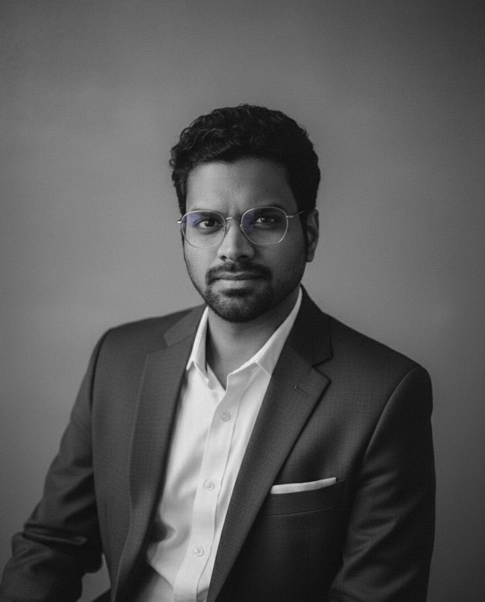

About
Solutions architect working on real-time data platforms and agentic AI in financial services.
Profile

Add photoimages/portrait.jpgProfessional headshot, portrait orientation
I've spent more than 17 years on the middle layer of large systems: integration, middleware, caching and real-time data. That work began in consulting with Cognizant and Capgemini across healthcare, supply chain and financial services, and since 2018 has been at Synchrony Financial, where I lead a 50+ person global team.
My current focus is what changes when AI agents, not people, are the ones calling these systems. I work on that in production, publish research on it, and speak about it at international conferences.
Career
- 2022–now
VP, Solutions Architect
Synchrony Financial
- 2018–2022
AVP, Solutions Architect
Synchrony Financial
- 2016–2018
Senior Consultant
Capgemini, engaged on the Synchrony Financial account
- 2009–2016
Project Lead Developer
Cognizant. Healthcare integration and UPS middleware.
Education
- 2025
Post Graduate Program in Artificial Intelligence & Machine Learning: Business Applications
McCombs School of Business, The University of Texas at Austin, delivered with Great Learning
Bachelor of Engineering
Anna University, Chennai
Memberships and recognition
- IEEE Senior Member
- SAS Eminent Fellow Membership
- IETE Fellowship
- 2025 Synchrony CEO Award